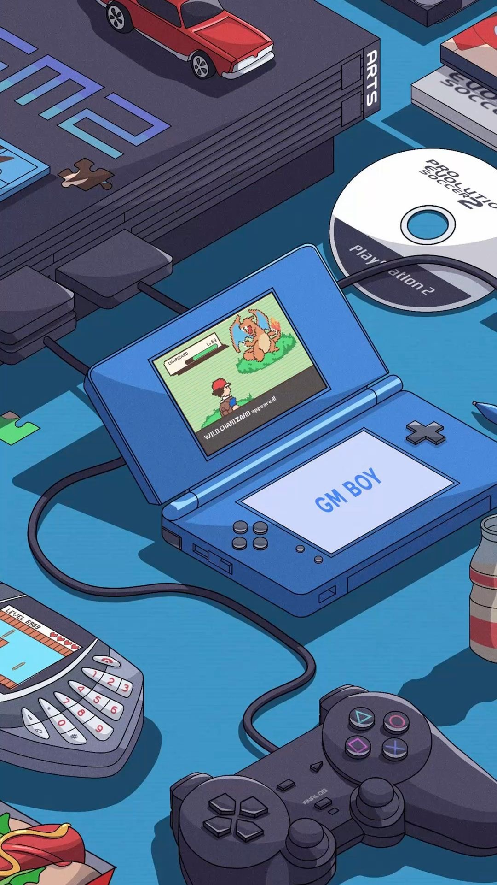

I'm currently studying Computer Science at Ferdowsi Undeversity of Mashhad. As someone who is studying Computer Science, everyone expect me to be a programmer or they ask me about my projects and my experiences as a CS student. The truth is more than being passionate about math and how to code, I'm interested in learning different arts or reading about literature. By being interested in drawing and character design, my dream as a CS student was always to publish my own game with my own graphic design.